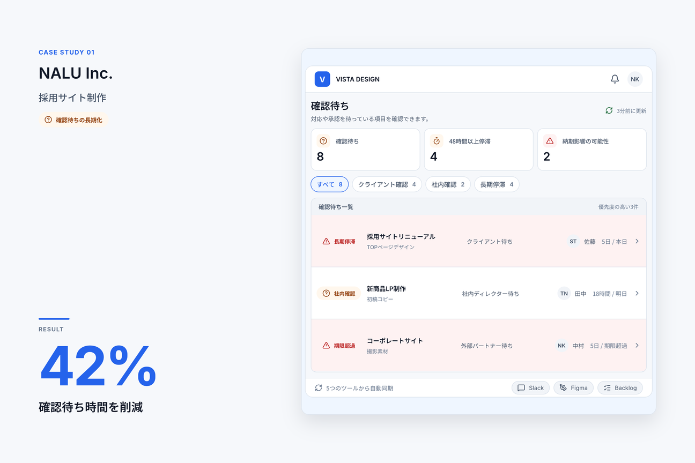
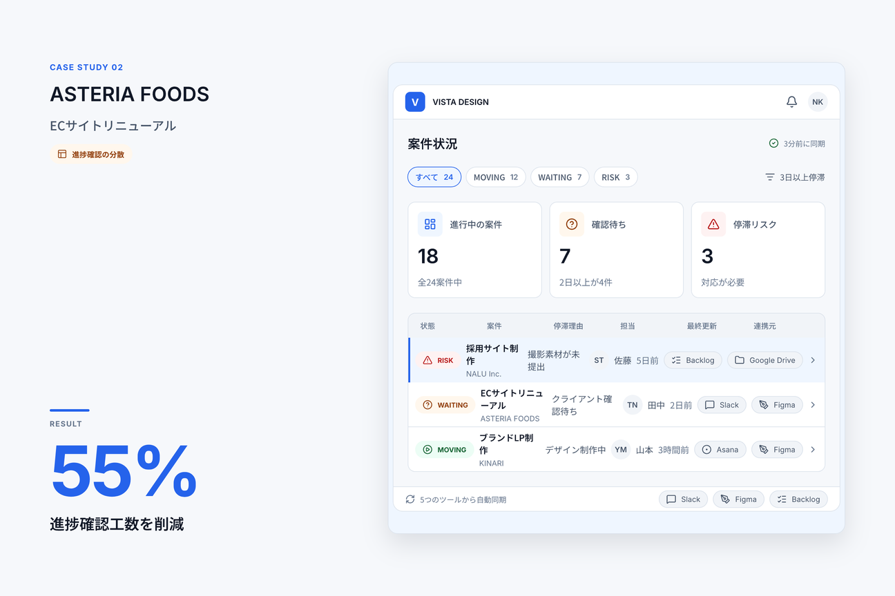
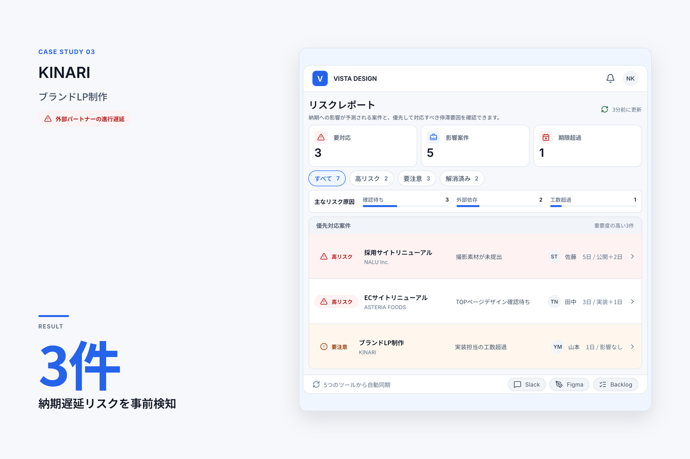

CASE STUDIES
進行が見えると、チームの成果が変わる。
確認待ちや停滞を早く見つけることで、 制作進行の負担を減らし、 案件を前へ進められます。
CASE 01
NALU Inc.
01 / 課題
確認待ちが長期化
複数の確認依頼が分散し、どこで止まっているのか把握しづらい状態。
02 / 使った機能
Waiting Inbox
確認待ちをまとめて一覧化し、誰の確認で止まっているかを見える化。
03 / 成果
確認待ち時間を削減

CASE 02
ASTERIA FOODS
01 / 課題
進捗確認が分散
複数の場所に進捗情報が分かれ、案件全体の状況を確認しづらい状態。
02 / 使った機能
Dashboard
案件ごとの進行状況をひとつの画面にまとめ、全体の状態を確認しやすくします。
03 / 成果
進捗確認工数を削減

CASE 03
KINARI
01 / 課題
外部パートナーの進行遅延
社外メンバーを含む制作進行では、遅れや停滞に気づくまで時間がかかりやすい状態。
02 / 使った機能
Risk Report
停滞リスクのある案件を整理し、フォローが必要な状況を早めに確認できます。
03 / 成果
納期遅延リスクを事前検知
